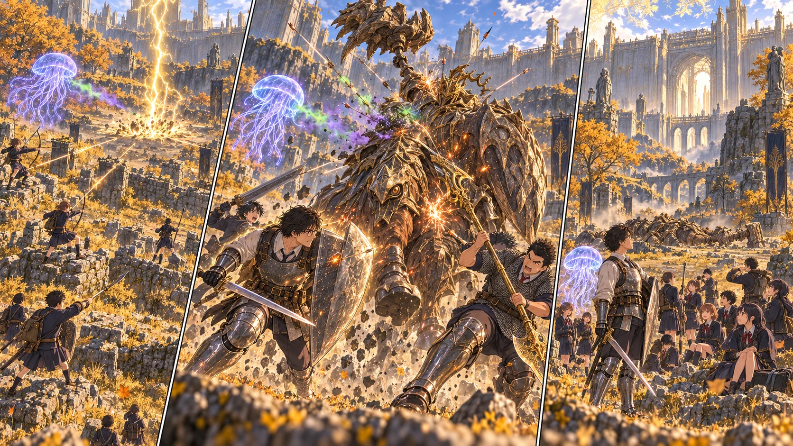

DAY65 / TURN1−75
雷を越えて、王都の門へ。

陽太「盾が上がる！ 離れて！」
【DAY65｜旅の途中の祈祷師】高原の道で、先生はコリンと再会した。昨日の円卓と違って、頭上には空がある。こちらの戦いのためだけにそこにいる人ではない。それでも事情を話すと、雷から身を守る祈祷を教わることができた。七百五十ルーン。支払いを終え、先生は聖印を握り直した。
雷防護は仲間全員へは届かない。魔力防護と重ねても、二枚の膜にはならない。先生は今回は雷防護を選び、短い持続時間をどこへ使うかまで決めた。炎竜印は別に身につけた。いずれも、正面から何でも受け止めていいという許可ではなかった。
登録済みの外廓の戦場跡に、十三人がそろう。前回踏んだ道を確認してから、門へ向かった。陽太は今度、敵の盾を見る役も引き受けた。自分が痛い目に遭った一瞬を、誰より早く仲間へ伝えるために。
【第一局面｜2d6＋5＝14】先生が前へ出た。炎を避けた直後に武器が来る。その続きまで思い出して、回避の後に立ち止まらない。盾の向きを保ち、振り下ろしが地面へ届いたところで一撃を返す。大きな一撃ではない。それでも騎士がこちらを向く間を作れた。
クララは、前回より味方の退路から離れた側面にいた。透けた傘が揺れ、毒を含む射撃を送る。花と千夏は別の角度から矢を放った。仲間の支援が届いている間、先生は一人で早く倒そうと手数を欲張らなかった。
【赤い盾】騎士が盾を上げる。陽太の声が先に届いた。「盾が上がる！ 離れて！」。彼自身も仲間のいる方へ寄らず、空けておいた側へ動く。先生は仲間が退避を援護する間に聖印を握り、雷防護を詠唱した。守りが増えても、足を止める理由にはしない。
【第二局面｜2d6＋5＝13】雷が落ちたところには、もう列がなかった。逃げる先を奪い合わず、それぞれが空けた場所へ移った。クララも巻き込まれていない。前回、あの傘がほどけた辺りへ落ちた光を見て、先生は配置を変えた意味を初めて身体で理解した。
毒の射撃は続いた。すぐ敵を倒す大技ではなくても、呼び出した後すぐに消されなければ、支援を重ねる時間ができる。先生が注意を引き、騎士が振り向けば射手が攻撃を止めて移る。その間に、別の角度から矢と術が届く。戦いを長く支えられる形が、今度は崩れなかった。
【第三局面｜2d6＋4＝13】防護の感覚が薄れた。先生はそれを、まだ持つはずだと思い込まなかった。「祈祷、切れた」。短く伝え、次の雷には距離で備える。大地も誓いが永遠に続くようには扱わず、振り切った敵の横へ黄金の刃を入れた。
陽太が盾の動きを見て声を出し、直人が踏み込む間を選ぶ。花の矢が飛んだ後、先生が敵の前へ戻った。誰か一人の無理で押し続ける戦いではなかった。あの退却の日に、十三人がそれぞれ持って帰ってきた失敗が、別々の場所で役に立っていた。
騎士が大きく体勢を崩した。最後の攻撃が重なり、門を塞いでいた巨体がついに倒れる。先生はすぐには武器を下ろさなかった。敵が動かないこと、周囲から次の影が来ないこと、仲間の返事が全部聞こえることを順番に確かめる。
十三人。負傷なし。クララの傘も、まだ側面に漂っていた。「助かった」。先生の声に返事はない。それでも今回は、戦いが終わるまでそこにいてくれた。帰るために召喚範囲を離れるとき、その輪郭は静かに消えた。
【戦利品と、その先】五千ルーンと大竜爪、竜爪の盾を回収した。重い武器と盾を、手に入れたからというだけで誰かの装備へ書き換えはしない。運べるように分担し、能力と重さを後で確かめる。先生は、敗退した日に残した地図へ、今度こそ撃破の印を付けた。
門の先には、王都城壁の祝福があった。位置を確かめ、まだ灯さずに記録する。すでに十三人が帰れる外廓の戦場跡はある。王都の街の奥へそのまま走り出すことはせず、今日は開いた入口を確かめるところまでにした。
【教会の草地】そのころ、美咲と澪は軍馬を新しい待機場所へ誘っていた。だが今日は、馬が途中で足を止めた。引き歩きができた昨日と、同じようには進まない。無理に引かず、慣れた場所で手入れをして終える。馬は段階二のまま。騎乗して戦いへ連れていく日は、まだ先だった。
十三人は戦場跡へ帰った。今度は勝って、それでも同じように帰還の人数を数える。陽太が自分の盾を見て笑った。「今日は、吹っ飛ばされませんでした」。先生は頷き、次は王都の中をどう進むか、地図の白い部分へ目を向けた。
今回の判定記録
| 判定 | 出目 | 補正 | 合計 |
|---|
| phase1 | 6+3 | 5 | 14 |
| phase2 | 5+3 | 5 | 13 |
| phase3 | 6+3 | 4 | 13 |
| horse | 1+2 | 2 | 5 |
| base | 5+1 | 3 | 9 |
抽選前の条件 · 抽選結果